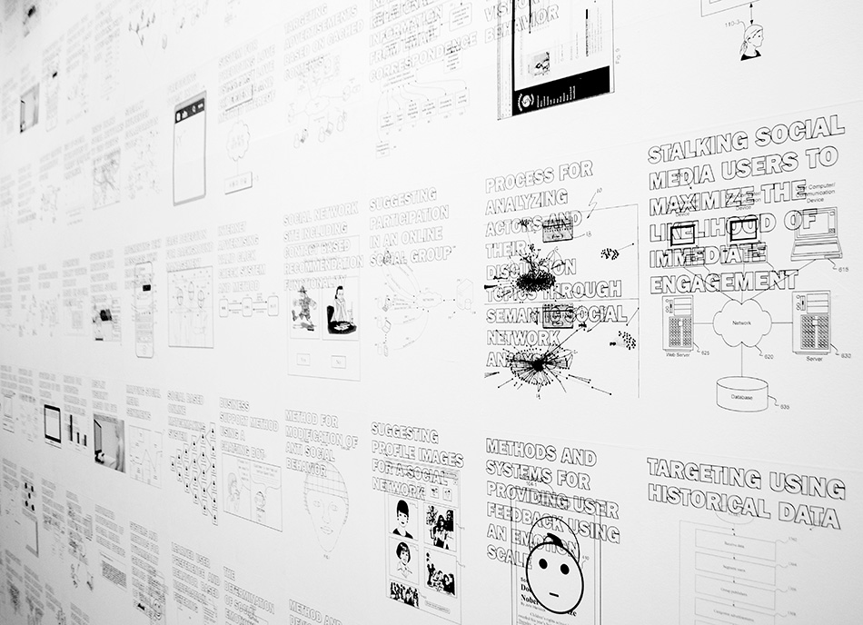

Cookies. Het woord klinkt onschuldig, huiselijk bijna. Maar achter die term schuilt een heel systeem van observatie: kleine tekstbestandjes die bijhouden wie je bent, wat je doet, waar je naar verlangt. Ze volgen de digitale kruimels die je achterlaat. "Accepteer alle cookies?" vraagt de interface vriendelijk. Maar wie bakt deze cookies eigenlijk? En waarom proef ik ze nooit? Misschien is het juist in het weigeren van deze cookies, in het bewust langzaam klikken op "instellingen beheren", dat er ruimte ontstaat om even stil te staan. Om niet klakkeloos te accepteren wat de interface ons voorschotelt, maar om te vragen: wat gebeurt hier eigenlijk? Wie heeft honger naar mijn data?
De zogezegde keuze die de cookies ons aanbieden bepalen het belang van onze acceptatie. Het begint al met de eenvoudige, directe vraag: "Accepteer alle cookies." Een zin die misbruik maakt van de gebruiker en ons manipuleert om op accepteren te klikken. Dit is een nieuwe vorm van "pedagogie", waarbij we worden getraind om de resultaten van algoritmes als de enige betrouwbare te beschouwen. Door dagelijks tientallen keren te worden geconfronteerd met deze schijnkeuzes, worden we geconditioneerd in een bepaald gedragspatroon. Net zoals een kind leert door herhaling, leren we als internetgebruikers om kritisch denken overboord te gooien en reflexmatig te accepteren. Deze digitale opvoeding heeft meerdere lagen. We worden niet alleen getraind om de resultaten van algoritmes als de enige betrouwbare te beschouwen, maar ook om weerstand tegen het systeem als tijdverspilling te ervaren. De "accepteer alles" knop is altijd prominent aanwezig en in één klik af te handelen, terwijl de optie om zelf keuzes te maken verborgen zit achter meerdere menu's en ingewikkelde technische taal. Deze pedagogische strategie leert ons dat gemak belangrijker is dan autonomie, dat snelheid belangrijker is dan controle, en dat acceptatie de norm is, niet de uitzondering. We worden zo opgevoed tot digitale burgers die geen vragen meer stellen. Tegelijkertijd blijft de onomkeerbaarheid van onze beslissingen (ja/nee) opzettelijk vaag. Uiteindelijk moeten ik ook een koekje opeten als oma het in mijn mond propt (of als ik er zin in heb) en weet ik ook niet altijd wat erin verwerkt zit. Maar hier gaat het koekje niet lopen met ons maar wij met het koekje.
In haar boek The Politics of Autonomy in Latin America: The Art of Organising Hope (C. dinerstein, Uit website https://www.weareplanc.org/2019/05/the-art-of-organising-hope-social-movements-and-critical-theory/, 2015), stelt Ana Cecilia Dinerstein dat hoop vandaag de dag moeilijk te vinden is. Er is een overvloed aan hopeloosheid die komt van diepe angst, sociale afstand, onderdrukking, onzekerheid en gevaar. Deze hopeloosheid wordt ingezet door kapitalistische discours en zorgen ervoor dat een bevolking stagneert en levenstandaarden dalen. Hopeloosheid demobiliseert ons denken en zorgt ervoor dat we de wereld niet meer durven begrijpen, bekijken, onderzoeken, vastnemen, wat volgens Dinerstein juist hetgeen is dat nodig is om de wereld te kunnen beginnen veranderen. We kijken op een façade, bang om de muur af te breken. Vandaag de dag is de digitale façade, een interface, een muur waar we voortdurend op kijken. Door de digitale muur te onderzoeken en haar steen voor steen af te breken, openen we de ruimte achter de façade. Door die ruimte zelf te schikken en zichtbaar te maken, ontstaat een vorm van verzet tegen digitale interfaces die door het kapitalistische systeem zijn toegeëigend. De kunstenaar Paolo Cirio documenteerde in zijn werk Sociality meer dan twintigduizend patenten van sociaal manipulatieve technologie. Hij verzamelde uitvindingen die ingediend waren bij het Amerikaanse patenten bureau door in Google Patents the hacken. De patentgegevens werden omgevormd tot visuele composities: stroomdiagrammen en titels van uitvindingen die discriminatie, polarisatie, verslaving, misleiding en surveillance mogelijk maken. Deze werden gepubliceerd als posters en een kleurboek. Hij bracht deze patenten samen op de website Sociality.today en nodigde het publiek uit om technologieën te markeren die ontworpen zijn om gedrag te monitoren en manipuleren. Cirio's werk legt bewijs bloot van sociale manipulatie en stelt de ethische en juridische structuren van deze technologische systemen ter discussie. De grootschalige composities tonen de complexiteit en omvang van plannen om menselijk gedrag te programmeren, tevens dezelfde mechanismen die ten grondslag liggen aan de schijnkeuzes van cookies die wij te zien krijgen.

foto: https://www.paolocirio.net/work/sociality/